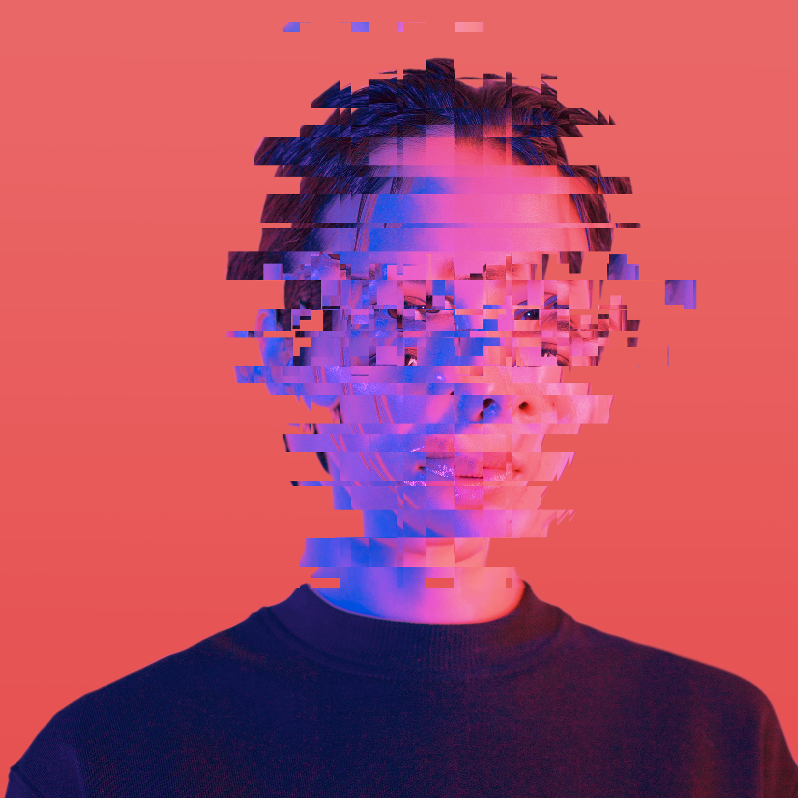

Playlist Picks
Music interview series
An interview series that involved guests such as Busted, Peter Andre, Steven Yeun, and Zak Able building music playlists. All episodes were shot, edited, and released within the same day.
Roles: Camera, Editor, Graphics, Music
Client: Metro

ViewRanger Stories
Mini-Documentary series
A series of 11 mini-documentaries that followed users of the GPS tracking app ViewRanger.
After the series I also edited a trailer for the app using the footage collected from the shoots alongside additional graphics.
Roles: Camera, Editor, Graphics
Client: ViewRanger

Deepfakes
Journalism Feature
A look into Deepfake technology.The piece includes a simple explanation of nerual networks, their applications, and how this has manifested into Deep Fake videos.
Roles: Researcher, Camera, Editor, Graphics
Client: Metro